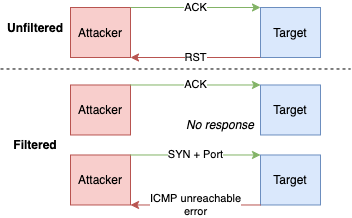

Scanning techniques
- Used to
- Identify open ports also i.e. port scanning
- Identify which hosts or are alive i.e. host discovery
- Same techniques can be used for both port scanning and host scanning
- But can require different tools or commands
- See: Nmap port scanning vs host discovery commands
Techniques per protocol
Scanning ICMP
- Also called ping scan or ICMP scan
- Typically used for checking if a host is alive or has errors
- It saves time before running a port scan
- Often incoming ICMP requests are disabled by firewalls.
- On Network Layer 3, so does not have port abstraction like TCP/UDP (Transport layer 4)
- In Nmap, ping commands start with
-P*e.g.-PEforICMP Echo - Round-trip time
- Time it takes for a packet to make a complete trip
- If blocked, usually returns no response or sometimes ICMP errors such as type 3 code 13 (destination unreachable: communication administratively prohibited)
Broadcast ICMP ping
- Sends packet to every possible address on the network
- E.g.
ping -b 192.168.135.255(subnet broadcast) - Pings to
192.168.129.19,192.168.129.20,192.168.129.21... - Or all broadcast through
ping -b 192.168.129.255- Alive hosts will populate local arp table, can be seen using
arp -a
- Alive hosts will populate local arp table, can be seen using
- Usually discarded and a useless method
- See also Smurf attack |Denial of Service
ICMP ping packet types
- Echo
- Sends
ICMP ECHO(type 8) expectingICMP ECHOreply - Also known as ICMP echo scanning or ICMP ping sweep
- Tools
- Nmap:
-PE - hping:
hping3 -1 <target>
- Nmap:
- Timestamp
- Sends
ICMP TIMESTAMP(type 13) - Tools
- Nmap:
-PP - hping:
hping3 -1 <target> --icmptype 13
- Nmap:
- Address mask
- Sends
ICMP ADDRESS MASK(type 17) - Tools
- Nmap:
-PM - hping:
hping3 -1 <target> --icmptype 17
- Nmap:
ICMP ping sweep
- Also called ICMP sweep or ICMP echo scanning
- Used to determine active hosts in target network range.
- Tools include
- Angry ip
- Nmap:
nmap -sn 192.168.0.*- or
nmap -sn <ip-address>/<subnet-range> - or
nmap -sn 192.168.0.1-30to scan e.g. between1-30in last octet -sn: (optional) skip port scan
- or
Scanning TCP
TCP connect
- Also known as full open scan or TCP Connect() scan
- Used for detecting open ports upon the completion of the three-way handshake.
- Works by establishing a full connection and then dropping it by sending a RST packet.
- Pros
- Accurate, most reliable
- Requires no additional user privileges
- Allows scanning behind a firewall.
- Cons
- Easily detectable by IDSes and logged
- Use SYN which would be faster and stealthier
- Tools
- Nmap:
nmap -sT <ip-or-host>
SYN scanning
- Also known as TCP SYN ping, SYN stealth, stealth scan, half-open scan or TCP ping scan
- Default and most popular scan
- Works by resetting the TCP connection before the three-way handshake is completed, which in turn makes the connection half open.

- Pros
- Fast
- Reliable
- Works on any compliant TCP stack
- Stealthy because it never completes TCP connections (can bypass firewalls and logging)
- Cons
- Require root privileges
- Rulesets block many SYN scan attempts
- Tools
- Nmap:
-PS(host discovery) or-sS(port scan) - Hping:
hping3 -8 <port-list e.g. 50-60> S <ip-address> V
RFC 793 scans
- According to RFC 793, any packet not containing
SYN,RST, orACKbits will result in RSTif the port is closed- no response the port is open
- Works by sending TCP probe packets with or without
SYN,RST,ACKflags. - Pros
- Very stealthy (more than SYN) against IDS and logging systems
- Avoids TCP three-way handshake
- Cons
- Require root privileges
- Unreliable (false positives) against systems does not follow the RFC
- Unix-only
- Ineffective against Windows and many IBM/Cisco devices
- Using Nmap, one could utilize
--scanflagsto test with permutations of each case (total: 8) to check forRSTresponse, but there are easier ways for most popular combinations: XMAS NULL scan FIN scan
XMAS Scan
- Works by sending a TCP frame with
FIN,URG, andPUSHflags set. - Christmas tree packet: packet with every option set, like bulbs on a Christmas tree

- Tools
- Hping:
hping3 -F -P -U <ip-address> -p <port-number>-FforFIN,-PforPUSH),-UforURG
- Nmap:
-sX'
Inverse TCP flag scan
- An inverse TCP scan has
PSHorURGorFINor none flag set, i.e. a single flag or no flag. - As opposed to XMAS that sets
PSHandURGandFIN, i.e. all three flags at once
NULL Scan
- Also known as NULL probe
- Does not set any bits (TCP flag header is 0)
- Nmap:
-sN
FIN Scan
- Also known as FIN probe
- Sets just the TCP FIN bit.
- Nmap:
-sF
ACK scanning
- Also known as ACK flag scanning, ACK flag probe scanning or TCP ACK scan
- Used to detect existence of firewalls, cannot detect open ports
- Works by sending TCP packet with
ACKflag set. ACK(acknowledgment) is used to acknowledge the successful receipt of a packet- 
- Pros
- Difficult to log, avoids IDS detection
- Helps detecting existence of stateful firewalls
- As they would not allow
ACKwithoutSYN, see TCP sessions
- As they would not allow
- Disadvantages
- Relies on BSD network code bug in older versions
- Slow
- Tools
- Nmap:
-PA(host discovery) or-sA(port scan) - Hping:
hping3 A <ip-address> p <port>
ACK Classification
- Two fields are inspected to classify
RSTresponse:WINDOWandTTL TTL-
It's open if TTL has less than
64while others have higher valuestxt packet 1: host X.X.X.X port 20: F:RST -> ttl: 70 win: 0 => closed packet 2: host X.X.X.X port 21: F:RST -> ttl: 70 win: 0 => closed packet 3: host X.X.X.X port 22: F:RST -> ttl: 40 win: 0 => open packet 4: host X.X.X.X port 23: F:RST -> ttl: 70 win: 0 => closed -
WINDOW - It's open if it has non-zero value.
- Works for older BSD and UNIX but has been patched
txt
packet 1: host X.X.X.X port 20: F:RST -> ttl: 64 win: 0 => closed
packet 2: host X.X.X.X port 21: F:RST -> ttl: 64 win: 0 => closed
packet 3: host X.X.X.X port 22: F:RST -> ttl: 64 win: 512 => open
packet 4: host X.X.X.X port 23: F:RST -> ttl: 64 win: 0 => closed
IDLE scan
- Also known as TCP Idle Scan, IDLE header scan, header scan, IDLE/IPID scan
- Allows for blind port scanning (without sending any packet with own IP)
- Utilizes IP address of a zombie machine through spoofed packets
- Found by author of hping2 tool
- Flow
- Probe the zombie's IP ID and record it.
- IP ID
- Every IP packet on the Internet has a fragment identification number
- Incremented by OSes for each packet sent
- Zombie should be
- idle as no other traffic would increase the traffic
- assigning IP ID packets incrementally on global level instead of per-host basis.
- Forge a
SYNpacket from the zombie and send it to the desired port on the target. - Probe the zombie's IP ID again.
- If it's increased compared to one in step 1, port is open (it has received)
- Pros
- Ultimate stealth scan as attackers IP would not be revealed
- Can be used for framing as IDS will report zombie as the attacker
- Cons
- It takes far longer
- Many ISPs implement egress filtering to prevent the packet spoofing
- Tools
- Nmap:
nmap -Pn -sI <zombie-ip/domain> <target-ip/domain>-
-sI: Idle scan -Pn: no ping to be stealthy
-
Scanning UDP
- Connectionless stream protocol, so no handshakes
- UDP is used by e.g. DNS (port 53), SNMP (port 161/162), and DHCP (port 67/68)
UDP Scanning
- Also known as UDP ping, UDP/ICMP error scan, UDP port scan or UDP ICMP_PORT_UNREACHABLE scan
- Exploits UDP behavior where the receiver sends an ICMP packet with error code when a port is unreachable.
- No response is interpreted as "open" or "filtered" behind firewall
- Pros
- Avoids TCP IDS
- Scans non-TCP ports that are quite common
- Cons
- Provides port information only
- ICMP is rate-limited by Linux kernel however not by Windows
- Require root privileges
- Slower and more difficult than TCP
- Tools
- Hping:
hping3 -2 <ip-address> p <port> - Nmap: :
-PU(host discovery) or-sU(port scan)
Other techniques
List Scanning
- Performing a reverse DNS resolution to identify the names of the hosts.
- No packets are sent to hosts
- Pros
- Sanity check to ensure that target IP addresses are proper
- Stealthy, unobtrusive, does not trigger IDS alerts
- Tools
- Nmap:
nmap -sL <ip-address>
SSDP Scanning
- Used to detect UPnP vulnerabilities and carry out buffer overflow or DoS attacks
- SSDP
- Simple Service Discovery Protocol
- Network protocol based on for discovery of devices on same network
- Basis of UPnP (Universal Plug and Play) protocol
- Steps:
- Attacker discovers networked devices and create a list of all the devices that respond.
- Attacker creates a UDP packet with the spoofed IP address of the targeted victim.
- Attacker then uses a botnet to send a spoofed discovery packet to each plug-and-play device
- Each device will send a reply to the targeted victim with an amount of data up to about 30 times larger than the attacker's request.
- The target then receives a large volume of traffic from all the devices and becomes overwhelmed, potentially resulting in denial-of-service to legitimate traffic
- Tools
- Metasploit:
use auxiliary/scanner/upnp/ssdp_msearch
ARP Scan
- Useful when scanning an ethernet LAN
- ARP: Regular ARP packet request looks for the MAC address using the device's IP address.
- Tools
nping: Learn router MAC address:nping --arp-type ARP <router-ip-address>nmap:nmap -sn -PR 192.168.0.*-PR: ARP discovery-sn: skip port scan
Countermeasures
- Configuring firewall and IDS to detect and block scans
- Protecting mechanisms for filtering and routing from being bypassed using certain ports
- Updating the router, IDS, and firewall
- Keeping as few ports open as necessary and filtering the rest
- Checking the configuration of the network and its ports
- Ensuring the proper configuration of anti- scanning and spoofing rulesets